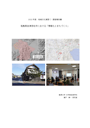
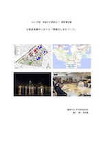

FY2024・静岡県静岡市（12名＋SA）
・第1章 静岡市における公共交通機関の現状と課題
・第2章 静岡市駿河区における自転車活用計画の現状と課題
・第3章 静岡市における賑わい創出の現状と課題
・第4章 静岡市清水区における地域包括支援センターの役割と課題
・第5章 静岡市内における防災対策の概況と事前避難への対策
・第6章 持続可能な農業への課題と今後の展望
・所蔵先：
FY2023・富山県富山市（17名）
・第1章 富山市市街地における内水氾濫への対策と発災時の”市電”からの避難
・第2章 富山ガラス文化における社会的つながりと課題
・第3章 富山市における多様な移動手段の提供とその可能性
・第4章 富山市中心商店街における賑わい創出に向けた官⺠連携
・所蔵先：富山県立図書館（T318.3/216/）
FY2022・福島県会津若松市（20名）
・第1章 会津若松におけるバス交通の現状と課題
・第2章 会津における食と観光の連携の特色と課題
・第3章 会津若松市内における歴史観光とまちづくりの現状と課題
・第4章 スマート農業の現況と導入支援のあるべき姿
・第5章 酒造業の現状とICT化
・所蔵先：会津図書館（/L31/ﾌ/）／福島県立図書館（L/318.8/K29/1 ）
FY2021・北海道室蘭市（16名）
・第1章 室蘭市中島町における土地利用の現状と変遷
・第2章 室蘭における観光向け公共交通の課題
・第3章 室蘭観光地の現状と課題
・第4章 室蘭市のコミュニティの現状と食